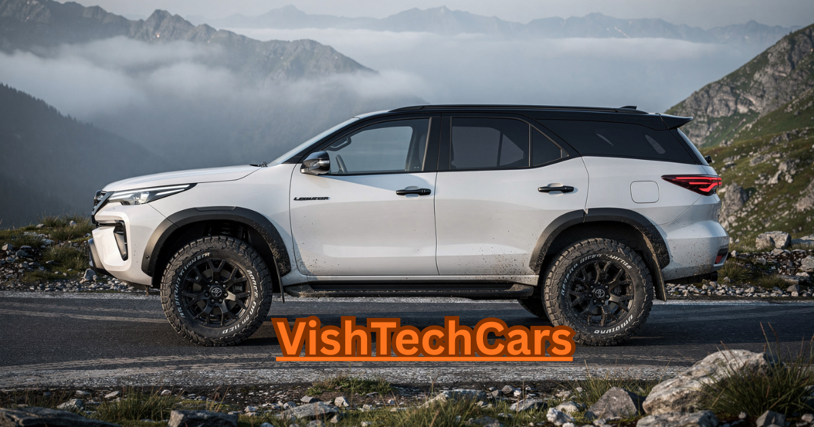

"In India, they don't call it an SUV; they call it a 'Pharchuner'. I remember driving through a small village last year, and the moment a white Fortuner passed by, people automatically cleared the way. That's the respect this machine commands.
But today, not everyone wants a huge 7-seater for city traffic. That’s where the Mini Fortuner comes in. It’s the same muscular DNA, the same aggressive face, but in a size that’s easier to live with. At VishTech Cars, we believe this is the move that will redefine the compact SUV segment in 2026."
But today, not everyone wants a huge 7-seater for city traffic. That’s where the Mini Fortuner comes in. It’s the same muscular DNA, the same aggressive face, but in a size that’s easier to live with. At VishTech Cars, we believe this is the move that will redefine the compact SUV segment in 2026."
Fortuner 2026 Lineup

Most Awaited
Mini Fortuner (Compact)
₹18.00 - ₹25.00 Lakh*
The ruggedness of a Fortuner in a compact 5-seater avatar. Perfect for urban explorers.
View Details Premium
Premium
Fortuner Legender
₹43.00 - ₹48.00 Lakh*
Extra style, extra features, and that aggressive dual-tone look that turns heads.
Review LegenderFortuner Price List 2026
| Variant Name | Expected Price (Ex-Showroom) |
|---|---|
| Mini Fortuner (Base) | ₹18.50 Lakh |
| Mini Fortuner 4x4 At | ₹24.90 Lakh |
| Fortuner Standard 4x2 | ₹33.40 Lakh |
| Fortuner Standard 4x4 | ₹40.20 Lakh |
| Fortuner Legender | ₹43.66 Lakh |
| Fortuner GR Sport | ₹51.00 Lakh* |
Which Fortuner is Right for You?
Buying a Fortuner is a big decision. Here is how to choose:
- For Daily Office Use: Go for the Mini Fortuner. It's fuel-efficient and easy to drive in traffic.
- For Status & Presence: The Legender is unbeatable with its dynamic LED headlights.
- For Hardcore Off-Roading: Always choose the Standard 4x4 Diesel for that raw torque.
- For Value for Money: The Standard 4x2 Petrol is the quietest and most affordable entry into the club.
The Reliability of Toyota
The reason people pay ₹50 Lakhs for a Toyota is not just for features—it's for the **Bulletproof Reliability**. A Fortuner engine can easily last for 5,00,000 kilometers without breaking a sweat. At VishTech Cars, we recommend the Fortuner for those who want peace of mind and the best resale value in the Indian market.